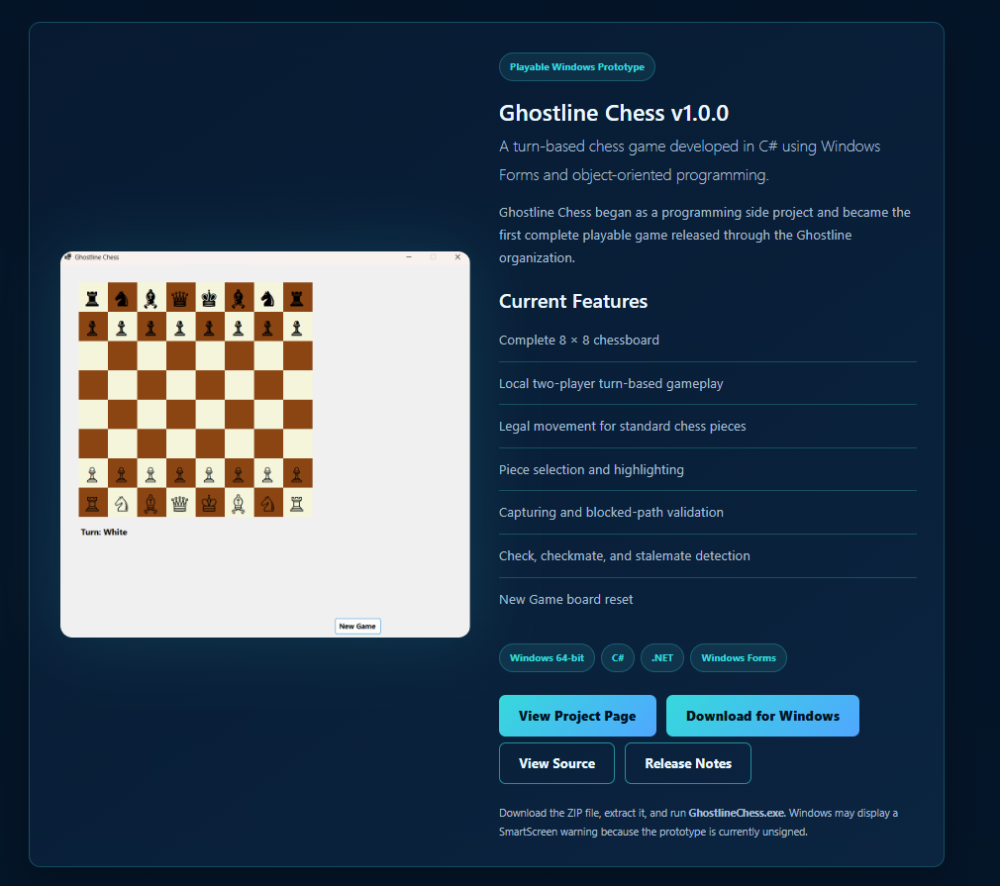

First Playable Windows Prototype
Ghostline Chess began as a focused C# Windows Forms project with a traditional board and a clean local two-player game loop. This version established the board model, turns, piece selection, movement validation, captures, and basic endgame detection.
Working Foundation
- Complete 8 × 8 board
- Local two-player turns
- Legal movement and blocked paths
- Captures and board reset
- Check, checkmate, and stalemate
What It Revealed
The prototype proved the core idea was playable. It also showed that the game needed a stronger visual identity, clearer game-state feedback, move history, and more complete handling of special rules.

The original Ghostline Chess v1.0.0 presentation and first playable board.